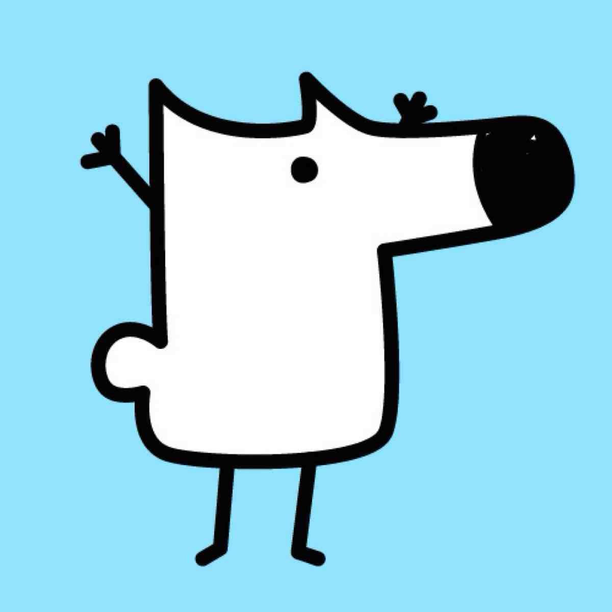

‹
返回「灵魂匹配局」
回到引流 Campaign 页
9:41
后来的答案
搜索「后来怎么样了」
专题 · 进行中
后来的答案专题
那些年写下的回答，后来怎么样了？
功能总览
社交·圈子·打赏
我的关注
我的私信
同路人匹配
话题圈子
豆
我的智慧豆 · 780 颗
●
打赏答主 · 提现明细 · 我的发布
›
更多话题
时间线
收藏
职场转型
大家裸辞之后过得怎么样？
1369 关注
2.8万 浏览
2022年提问
5
更新次数
47
追问数
1.2k
赞同
1年
时间跨度
发送
AI 帮你想了 3 个问题，点击使用
Q1
裸辞这一年里，最后悔的事情是什么？
Q2
如果重来一次，你还会选择裸辞吗？
Q3
现在的收入和裸辞前比，变化大吗？
我的追问
故事海报
AI 已提取金句
后来的答案
裸辞一年后，
没有
爽文结局
。
"这近一年的时间过得很快，没有做什么特别有意义的事情，只是平平凡凡地生活着。"
2025.04 → 2026.03 · 5次更新 · 1年时间线
后来的答案
裸辞一年后，
没有
爽文结局
。
"这近一年的时间过得很快，没有做什么特别有意义的事情，只是平平凡凡地生活着。"
2025.04 → 2026.03 · 5次更新 · 1年时间线
时间线追踪
追问驱动
AI金句提取
后来的答案
裸辞一年后，
没有
爽文结局
。
"这近一年的时间过得很快，没有做什么特别有意义的事情，只是平平凡凡地生活着。"
2025.04 → 2026.03 · 5次更新 · 1年时间线
时间线追踪
追问驱动
AI金句提取
后来的答案
裸辞一年后，
没有
爽文结局
。
"这近一年的时间过得很快，没有做什么特别有意义的事情，只是平平凡凡地生活着。"
2025.04 → 2026.03 · 5次更新 · 1年时间线
知乎蓝
← 左右滑动切换风格 →
保存海报
分享赚豆

小南
Lv.2 求索者
编辑
豆
780
智慧豆
打赏记录 ›
距 Lv.3 寻路人还需 1220 豆
3
我的追问
1
我的回答
8
收藏
7
粉丝
关注/粉丝
我的社交
关注、粉丝、私信一键管理
我的关注
查看已关注的用户
我的私信
查看未读消息
0
我的发布
查看发布的故事和回答
打赏记录
查看打赏收支
每日任务
今日已得 15 豆
成就徽章
4 / 8
初心者
追问达人
海报设计师
坚持者
故事分享者
智慧星
百赞达人
百问不厌
圈子
+ 创建
AI 智能匹配
找到你的同路人
基于你的故事标签、时间线跨度与追问方向，AI为你匹配经历相似的用户
开始匹配 →
话题圈子
裸辞日记
2.3万 成员
热门
考研之路
5.6万 成员
热门
创业避坑
1.8万 成员
职场转型
3.1万 成员
留学回来
9800 成员
自由职业
1.2万 成员
推荐加入
查看更多
心理健康
4.2万 成员
读书分享
2.8万 成员
消息
全部已读
回复
追问
赞
系统
豆
打赏
查看全部私信 →
用户主页
···
陈默
2025年裸辞，在不确定中寻找确定
+ 关注
私信
打赏
3
故事
128
关注
456
粉丝
1.2k
获赞
故事
时间线
追问
智慧豆
规则
豆
38
当前智慧豆余额
打赏
提现
充值
收支明细
每日签到
2026-09-11 连续签到第3天
+5
发起追问
2026-09-10 追问「陈默」
+2
分享海报
2026-09-10 分享「裸辞一年后」
+10
打赏答主
2026-09-09 打赏「林小满」
-20
故事被赞同
2026-09-08 获得3个赞同
+6
智慧豆提现
可提现智慧豆
38
100智慧豆 = 1元 · 最低提现10元
提现金额（元）
当前38智慧豆可提现0.38元，不足10元最低限额
提现方式
支付宝
已绑定 138****8888
微信
未绑定
申请提现
同路人匹配
重新答
正在为你计算匹配结果…
查看他们的时间线 →
再答一次 →
社交关系
+ 添加
关注
0
粉丝
0
互关
0
私信
+ 群聊
搜索私信
陈默
在线
···
对方正在输入...
发送
圈子
分享
圈子名称
2.3万 成员 · 今日 28 条新帖
2.3万
成员
1.2k
帖子
28
今日新帖
+ 加入圈子
帖子
精华
成员榜
同路人匹配
1/4
正在为你寻找同路人…
正在基于你的故事标签、时间线与价值观匹配经历相似的用户
分析你的故事标签…
比对候选人时间线…
计算经历重合度…
生成匹配报告…
我的发布
+ 发布
管理你的内容
查看发布的故事、回答与收到的打赏
1
发布故事
2.3k
总阅读
128
收到打赏
故事
1
回答
0
打赏
0
打赏记录
筛选
我打赏的
收到的
0
打赏次数
0
累计支出
0
平均
陈
给陈默打赏
支持优质回答,让分享更有动力
5
智慧豆
10
智慧豆
50
智慧豆
热门
100
智慧豆
200
智慧豆
500
智慧豆
其他金额
0
/80
当前余额
100
智慧豆
打赏
10
智慧豆
送
打赏成功!
已为TA送上10智慧豆
发现
圈子
消息
我的
追问已发送
答主会收到你的追问提醒
追问达10/30/100条时系统会提醒答主更新
好的